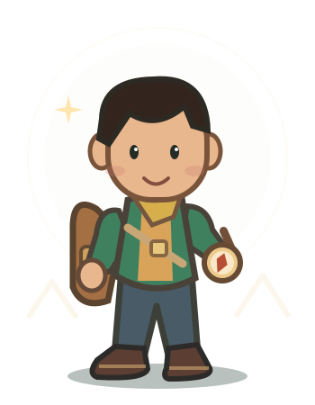

Bukan sekadar mengerjakan tugas.
Belajar.
Bertualang.
Berkembang.
Kenali gagasan Adaptive Task Recommendation—sistem pembelajaran berbasis game quest 2D semi-open world yang mengusulkan misi sesuai kemampuan mahasiswa.
✧ Dari asesmen awal, menuju petualangan belajar yang lebih personal.
Lima Pikiran. Satu Petualangan.
Di balik ATR Learning ada lima anggota tim yang membawa peran berbeda untuk mengembangkan dan memperkenalkan konsep pembelajaran adaptif.
Setiap gagasan besar
dimulai dari sebuah masalah.
Kami berangkat dari pertanyaan sederhana: bagaimana jika kegiatan belajar di perkuliahan bisa mengikuti kebutuhan setiap mahasiswa, bukan selalu berjalan dengan cara yang sama?
Kemampuan awal yang beragam
Mahasiswa masuk ke mata kuliah dengan tingkat pemahaman dan kesiapan belajar yang tidak selalu sama.
Tugas yang seragam
Penyajian latihan yang sama untuk semua mahasiswa belum tentu sesuai dengan kebutuhan individu.
Keterlibatan belajar
Aktivitas belajar membutuhkan pengalaman yang lebih eksploratif, menarik, dan memberikan umpan balik.
Adaptive Task
Recommendation.
ATR Learning mengusulkan pengalaman pembelajaran dengan eksplorasi dunia hutan dua dimensi dan game quest yang direkomendasikan berdasarkan hasil asesmen awal.
Pretest berbasis quest untuk memetakan pemahaman awal.
Rekomendasi tingkat kesulitan misi sesuai hasil asesmen.
Poin, pengumpulan kunci, dan spectator mode sebagai bagian dari konsep pengalaman belajar.

Dari langkah pertama
hingga quest terakhir.
Gambaran bagaimana mahasiswa dapat belajar melalui petualangan, penilaian awal, dan misi yang disesuaikan dengan kemampuan.
Masuk ke Dunia Belajar
Mahasiswa mengakses halaman pembelajaran dan memilih mata kuliah. Setiap mata kuliah dapat memiliki lingkungan dan rangkaian quest yang relevan dengan materinya.
Setiap perjalanan punya
tokoh utamanya.
Lima karakter petualang untuk membayangkan pengalaman bermain di dunia ATR Learning. Pilih karakter favorit untuk melihat profilnya.

01Bima
PENJELAJAHPetualang penuh rasa ingin tahu yang gemar menemukan jalur baru di Hutan Logika.
✦ Pilihan karakter ini adalah pratinjau visual untuk memperkenalkan konsep, bukan fitur masuk ke game sesungguhnya.